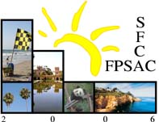

18th International Conference on Formal Power Series & Algebraic Combinatorics
June 19–23, 2006 · San Diego, California
Catamaran Resort Hotel, Pacific Beach, USA
Posters Scheduled For Thursday, June 22, 2006
A new construction of the Loday-Ronco algebra
Maxime Rey
Graded Graphs and Fomin's $r$-correspondences associated to the Hopf Algebras of Planar Binary Trees, Quasi-symmetric Functions and Noncommutative Symmetric Functions
Janvier Nzeutchap
Strong Descent Numbers and Turán Type Theorems
Ron M. Adin and Yuval Roichman
Green polynomials at roots of unity and its application
Hideaki Morita
New results on the combinatorial invariance of KL-polynomials
Federico Incitti
The number of Z-convex polyominoes
Enrica Duchi, Simone Rinaldi and Gilles Schaeffer
A Rook Theory Model for the Generalized p,q-Stirling Numbers of the First and Second Kind
Karen Briggs
Hankel Determinants for Some Common Lattice Paths
Robert Sulanke and Guoce Xin
General Augmented Rook Boards & Product Formulas
Brian Miceli
Some Expansions of the Dual Basis of $Z_{\lambda}$
Amanda Riehl
The $m$-colored composition poset
Brian Drake and T. Kyle Petersen
A general bijection for a class of walks on the slit plane
Philippe Nadeau
Enumerating Bases of Self-Dual Matroids
Molly Maxwell
Classifying ascents and descents with specified equivalences mod k
Jeffrey Liese
A Labelling of the Faces in the Shi Arrangement
Felipe Rincon
Restricted Dumont permutations, Dyck paths, and noncrossing partitions
Alexander Burstein, Sergi Elizalde and Toufik Mansour
Restricted Patience Sorting and Pattern Avoidance
Alexander Burstein and Isaiah Lankham
Octahedrons with equally many lattice points and generalizations
Thomas Stoll and Robert F. Tichy
Pattern avoiding doubly alternating permutations
Erik Ouchterlony
"Elliptic" enumeration of nonintersecting lattice paths
Michael Schlosser
Return to the
FPSAC'06 website
.